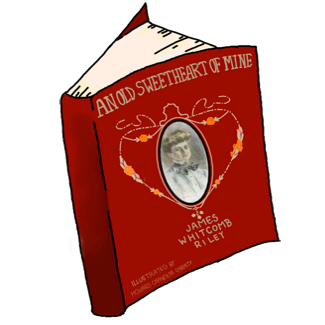
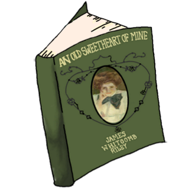

A specific, yet unique book in 1902 was published in various different editions. Many of which had a different book color, a different woman's image on the front cover, and some even had the illustrator's name printed on them. Is digitization destroying what was once considered an unique aspect of our printing history? Let's find out.

The covers can be freely dragged around and placed right on top of the naked book. Each of the cover represents one of the cover editions available of An Old Sweetheart Of Mine from 1902.

- 
- 
My creative work was a website I built up from scratch, inspired by Andrew Stauffer’s “On Digitization and the Future of the Print Record.” My idea originated from Andrew Stauffer’s concept of comparing book editions of An Old Sweetheart Of Mine written by James Whitcomb Riley and illustrated by Howard Chandler Christy from 1902. This website contains an interactive game section meant to immerse the user with Andrew Stauffer’s point, that is digitization is “enabling a flattening of the human record in all of its variability” (220). With the advancement of technology, people tend to neglect the origins of the texts we read online. All that is left digitally is the black and white colored words. Before digitization, books were published in various copies and illustrations. The variability showed amongst all the editions is what refined the details of each book in their unique way. However, with the rise of digitization of non-rare, out-of-copyright books, it is also demonlishing our historical aspect of the books' era.
This creative piece works through dragging any of the three available edition covers from An Old Sweetheart Of Mine from the left column to the actual book on the right. I selectively picked out three covers out of all the published editions based on the most noticeable differences amongst them all. The first obvious contrast between them is the color choice. All of which were written by the same writer, James Whitcomb Riley, with the same illustrator, Howard Chandler Christy, in the same year of 1902. However, there existed multiple different color backgrounds for the same book. Additionally, the self-portrait in the center of the book is also something that one cannot easily overlook. They all appear in different shades or in a different image. These small, yet noticeable variations are essentially the left-over evidence of our once existed fork-printing history. The concept of this interactive game is to show that we should be trying to retain historical values, rather than cut down to its core in its simplest form digitally.
This creative piece of website took a while to be constructed. I encountered many obstacles along the road. Even though I am not fully satisfied with my final set-up, but I am more than happy I got this opportunity to build something up by myself, starting from the art work to the final website construction. The process began with the artworks. I recreated the chosen three pieces in my own art style, and it represented all my hard work, much similar to Howard Chandler Christy from 1902. After finishing up my pieces, I had to create a website specifically to suit the format of the game and the book. I also had to take into account of various colour combinations for the website to fit in with my game. Finally, I came to the conclusion that golden fonts and navy-blue background color is ultimately the best choice. Majority of the book editions used a golden-ish yellow color as their title and the book cover usually had some sorts of blue tints in it. This is what inspired me to pick those two specific colours for the website. I think if I had more time to work on this website, I would be able to add in more book cover selections and also put more details to the layout of the website. Overall, I am still pleased with how much I was able to accomplish.